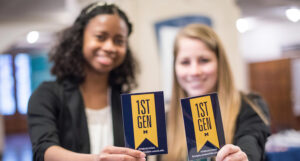

History of First Gen

The First-Generation Student Program is grounded in a history of student activism. First-Generation College Students @UM, a student organization, was founded in 2007 with the mission to increase accessibility to resources for first-generation students and to build community among the population. The students advocated for greater campus support for themselves and other peer first-generation students. In 2017, University of Michigan hired the inaugural first First-Generation Program Manager, established the First-Generation Gateway Office, and launched multiple initiatives to increase first-generation student success. As a result, student engagement has increased significantly since 2017 and University of Michigan’s first-generation efforts have received national recognition. We are collecting and sharing stories from other first-generation college students and graduates to inspire and offer advice to current and future first gens. We’ve also compiled useful information about college life, paying for college and other programs and services. Above all, we hope this site helps you open doors and connect with U-M’s community of first-generation students and those who will support and encourage you throughout your journey.
Defining "First-Generation College Student" at the University of Michigan
At the University of Michigan, we define first-generation college students as individuals whose parents or guardians have not attained a four-year college degree. This inclusive definition applies to both undergraduate and graduate students. While the University of Michigan adheres to this definition, all signature events organized by the University of Michigan’s First-Generation Student Gateway are accessible to any student who believes these resources could benefit them. The term “first-generation” was initially coined within TRIO Support Services to underscore the unique challenges faced by students with multiple intersecting identities as they embark on their higher education journey (Jehangir & Romasanta, 2021). This terminology seeks to shed light on the fact that the structures of higher education were not originally designed with the needs of first-generation college students in consideration. The services and programs developed in response to this term aim to provide support to students encompassing all aspects of their identities, with a primary objective of enhancing accessibility to higher education for all.
To Be a FirstGen Student
It takes courage and determination to break new ground and try new things, to be FIRST. This includes being among the first in your family to attend and graduate from college. While going off to college can be challenging for all students, it can be especially intimidating for even the bravest first gens.
Mentorship
- Success Connects OAMI
- University Mentorship Program ONSP
- Mentorship & Orientation Resources MESA
SuccessConnects is a holistic support program focused on ensuring your academic, personal, and social success at Michigan. SuccessConnects promotes opportunities to excel in the undergraduate experience, ranging from networking and professional development to study skills and study abroad opportunities, while giving students a community of scholars and leaders amongst whom they can thrive.These goals are achieved through dynamic customized components.
The University Mentorship Program provides an opportunity for new first-year students to connect with volunteer mentors who are knowledgeable about the University in order to ease the transition from high school to college. Mentorship helps to make the University a smaller place, and builds relationships between students, faculty, and staff. Open to all first-year students, the Mentorship Program is one of many Michigan Learning Communities available to students. Transfer students interested in a mentorship program should apply to Transfer Connections.
The mission of MESA is “to promote student development and empower the campus community around issues of diversity and social justice through the lens of race and ethnicity.” The office partners with four mentorship/orientation programs.